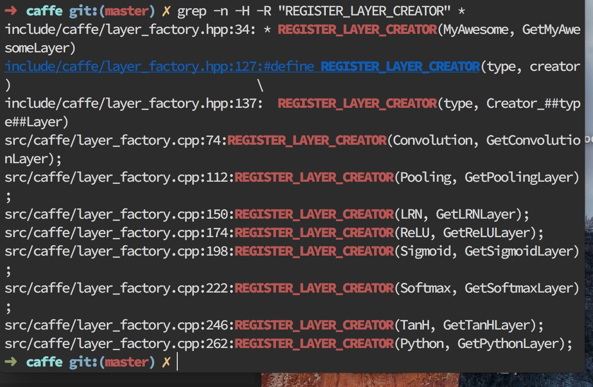
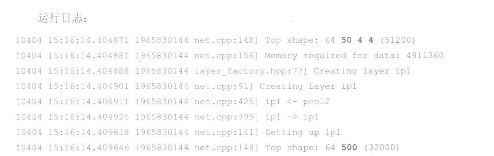

我们这里先了解一下caffe的目录结构:


其中主要关注的就是:include/,src/和tools/,三个目录,需要分析的代码都包含在这里面.
在阅读代码时,如何快速追踪某个关键词?传统的方法是打开某个文件,之后用查找命令来查找关键词.
这了我们介绍另一种方法,利用grep命令:
➜ caffe git:(master) ✗ grep -n -H -R "REGISTER_LAYER_CREATOR" *

我们可以看到,日志输出了很多文件.这种方法无需分别打开每个文件,也能直观的显示了所有包含这个宏的文件名和行号.
这里我们用grep命令来搜索一个宏调用:REGISTER_LAYER_CREATOR,
命令行参数解释为:
-n ---显示行号,便于定位
-H ---显示文件名,便与定位
-R ---递归查找每个子目录,适合工程较大,分多个目录存放的场景
利用这种方法可以很容易的在caffe源码中定位很多内容.
卷基层
这里我们假定卷积层有L个输出通道和K个输入通道,于是需要有LK,L=50,K=20个卷积核实现通道数目的转换.这里我们假定卷集核大小为I*J = 5*5,每个输出通道的特征图大小为M*N = 8*8,则该层每个样本做一次前向传播时卷积层计算量为:
Calculations(MAC) = I*J*M*N*K*L = 5*5*8*8*50*20=1600000MAC
实际中使送入一批样本(batch),所以我们这里还需要计算量乘上批量尺寸.
我们这里卷积层的学习参数量为:
Params = I*J*K*L = 25000
所以计算量-参数量之比为CPR=Calculations/Params = M*N = 64
所以我们得出结论是:卷基层的输出特征图尺寸越大,CPR值越大,参数重复利用率越高.,若一次性输入一批数据(B个样本),则CPR值可再提高B倍.
全连接层
早在卷积神经网络出现之前,最早的深度学习网络计算类型都是全连接形式的.如下所示.

每个节点与相邻层的所有节点都有连接关系,这是全连接层名称的由来.
全连接层的主要计算类型为矩阵-向量乘(GEMV).假设输入节点组成的向量为x,维度为D,输出节点组成的向量为y,维度为V,则全连接层计算可以表示为:
\[y=Wx\]
其中,W为V*D维权值矩阵.
我们分析全连接层的参数:


得出输出V=500,输入D=50*4*4 = 800(其中50是输入数量,4*4位图的尺寸)
则全连接层单样本前向传播计算量为:
\[
CalculationsMAC = V*D
= 800 * 500
= 400000
\]
参数统计量为:
\[
Params = V*D
= 800 * 500
= 400000
\]
所以CPR值为1
所以得出结论,全连接层的CPR值始终为1,与输入,输出维度无关.所以单样本前向向传播计算时,权值重复利用率很低.
我们将一批(B个)样本逐列拼接成矩阵X,一次性通过全连接层,得到一批输出向量构成的矩阵Y,称作批处理(矩阵-矩阵乘计算GEMM):
\[
Y=WX
\]
这样全连接层前向计算量提高了B倍,而参数量不变,因此CPR提高了B倍.
与卷积层相比，全连接层参数量是其16倍，而计算量只有其25%.如果输出特征图尺寸相同（M*V = V)，卷积层的CPR值为全连接层的M*N倍。也就是说，卷积层在输出特征图维度实现了权值共享。这是降低参数量的重要举措。与此同吋，卷枳层局部连接特性 (相比全连接）也大幅减少了参数量,这使得CNN网络中前几层卷积层参数量占比小，计算量占比大；而后几层全连接层参数量占比大，计算量占比小。大多数CNN模型都符合这个特点。因此我们在进行计算加速优化时,重点放在卷积层；而在进行参数优化、权值剪裁时，重点放在全连接层，